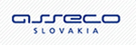

Spoločnosť
Profil firmy
Naša spoločnosť sa zaoberá poskytovaním komplexných služieb v oblasti informačných technológií. Špecializujeme sa najmä na databázové informačné systémy postavené na najnovších technológiách. Našim cieľom je poskytnúť zákazníkom primerané a kvalitné riešenia a budovať s nimi korektné a dlhodobé vzťahy.
Počiatky spoločnosti siahajú do roku 1992, v ktorých sme sa zameriavali na vývoj databázových aplikácií a poradenstvo pre ekonomickú oblasť. Nami vytvorené riešenia pokrývali informatizáciu vnútrofiremných procesov ako technická príprava výroby, riadenie výroby, skladové hospodárstvo, fakturácia, účtovníctvo a evidencia majetku.
Prečo my
Naša dlhoročná prax (od roku 1992) a referencie z významných projektov svedčia o stabilite a rozsiahlych skúsenostiach. Rozumieme potrebám zákazníkov a navrhujeme primerané riešenia pri dobrom pomere ceny a výkonu.
Naši partneri

Náš tím
Vážime si lojalitu a profesionálny rozvoj našich pracovníkov. Väčšina tímu pracuje v spoločnosti dlhodobo (viac ako 5 rokov). Máme skúsenosti ako analytici, programátori a konzultanti na domácom aj zahraničnom trhu.
Technológie a zručnosti (výber):
- Oracle Database, Oracle PL/SQL
- Oracle Developer (Forms, Reports)
- SQL, Java, XML, HTML, XSL, CSS, JavaScript, PHP
Pracovné príležitosti
Hľadáme schopných a aktívnych ľudí so záujmom o IT. Ponúkame priateľský kolektív, dobré pracovné podmienky a primerané finančné ohodnotenie. Výhodou je znalosť angličtiny alebo nemčiny a praktické skúsenosti s vývojom databázových aplikácií. V prípade záujmu zašlite životopis cez stránku kontaktných informácií.